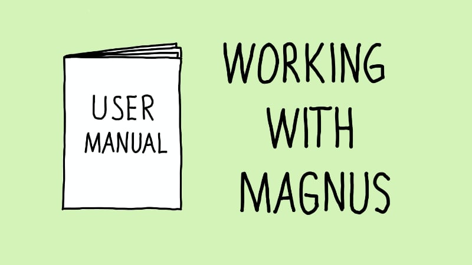

Working with Magnus

This page is intended both as an example of what information you ma choose to include on a Working With Me page might include and as my real life Working With Me page.
Basic facts about me
- I live in London, UK (Whitechapel, to be more precise)
- I mainly work from a co-working space near Aldgate
- My languages: English, Swedish and a tiny bit of German
- Why I work remotely: I enjoy the flexibility. Plus it’s a really exciting area as an agile coach when so many argue that teams have to be co-located.
The hours I like to work
- I usually work 8 am - 4 pm UK time
- I do my best work in the morning. If you need me outside regular hours, I find it much easier starting an hour earlier than staying an hour late.
- I’m usually pretty good at switching off outside of work. That means that unless we have agreed something else, I will read your message when I’m back in.
The best ways to communicate with me
- Slack is my preferred option for quick messages. Just don’t
@mentionme, please, unless you need me to drop what I’m doing. [1] - Video calls are great for discussing things! Please give me a heads up so I can go somewhere where I don’t disturb those around me.
- Email is good for information sharing. Please note that I have my notifications turned off and only read emails between tasks, so choose another method if you need an urgent answer.
- Text me if something is urgent. And be aware I won’t answer my phone unless we have a pre-arranged call. Again, text me if it’s urgent.
- When I’m in a meeting, I will give it my full attention. Unless you’re one of the participants, I probably won’t see your Slack messages, emails or text messages.
- Aside from meetings, I’m almost always interruptible. In the few cases when I’m not, I will hide away.
- It is important to me not to disrupt you. Please let me know how you want me to communicate with you!
How I can be misunderstood
- I can be a bit quiet in group settings, particularly if I feel the right things are already being talked about. That doesn’t mean I’m not fully engaged.
- People may think I’m a bit dry and only when we get to know each other a bit better will they notice my sense of humour.
- I need a bit of me-time from time to time during the day. That’s how I recharge. That doesn’t mean I wouldn’t love to go for lunch together another day.
Other things to know about me
- I am from Sweden and have lived in the UK since 2007
- I started as a developer and still do a little bit of coding in my spare time
How I like to receive feedback
- Constructive feedback helps me improve, and I really, really appreciate you giving it to me. Slack, email, video call or face-to-face - whichever way you want is good.
- Lately, I’ve come to realise I quite appreciate appreciation. If I did something that helped you, let me know. It will make my day!
Things I need
- As your agile coach or scrum master, I need to be able to see what’s going on. That becomes very hard if everyone only communicates with each other 1:1 using private messages.
- My best ideas come when I get a bit of time on my own to think and process the available information.
Things I like
- Even if I’m not hands-on making things these days, it’s important to me to (at least try to) understand the work my team is doing.
- I like it when people listen to each other and try to see each other’s perspective
Things I don’t like
- When people are late for meetings, wasting the time of everyone who made an effort to be there on time
- Process for process sake. That’s just stupid.
Things I may struggle with
- I’m genuinely bad with names and faces. Please don’t take it personally! I’m trying my best.
- I’m not great at networking. At meetups, I stuff my face with pizza as soon as the talks finish and make a quick exit.
[1]: Pro tip when using Slack: Don’t send a hi @magnus to someone and then spend 3 minutes typing the next message while they have to sit there waiting. Merge the two into one message instead!